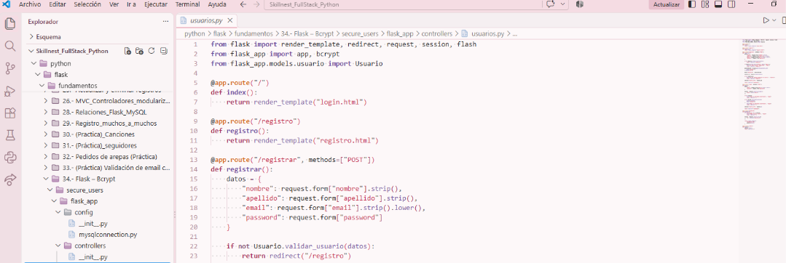

Conoce mi universo
Me gusta transformar ideas en experiencias digitales bonitas, creativas y fáciles de utilizar.
Soy egresada de Técnico en Programación del Liceo Comercial Vate Vicente Huidobro y actualmente estoy aprendiendo desarrollo web en Skillnest. Me interesa explorar nuevas tecnologías, diseñar interfaces y descubrir todo lo que puedo crear con código. Este portafolio representa mi proceso, mis aprendizajes y los proyectos que iré construyendo en el camino.

Mi meta: realizar mi práctica profesional, crecer como desarrolladora y crear proyectos que combinen utilidad, creatividad, personalidad y estética.
Estructurando ideas y resolviendo desafíos a través del código.
♡